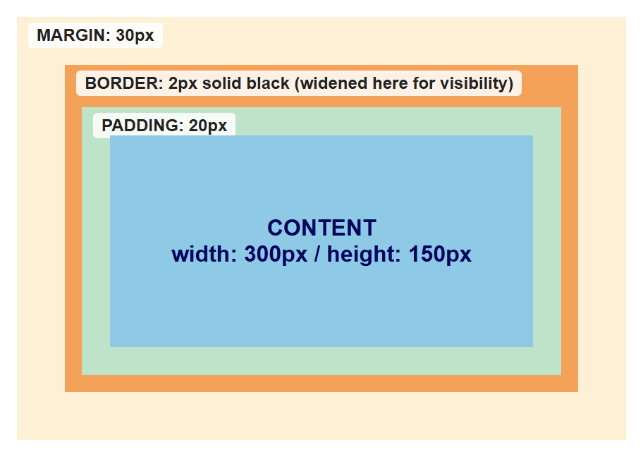
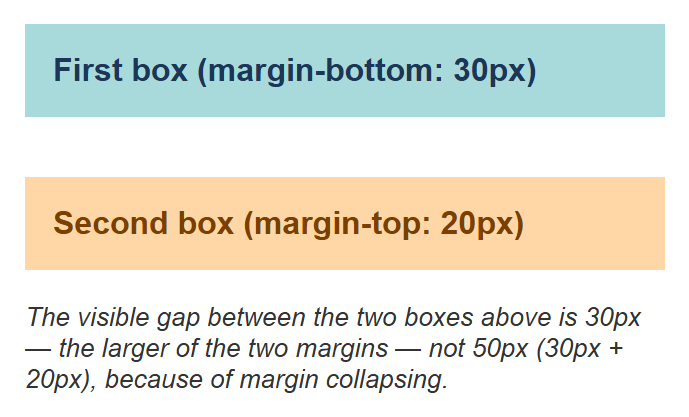
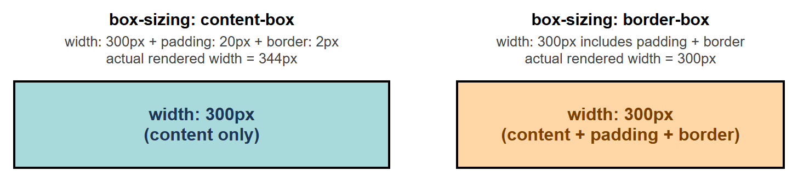
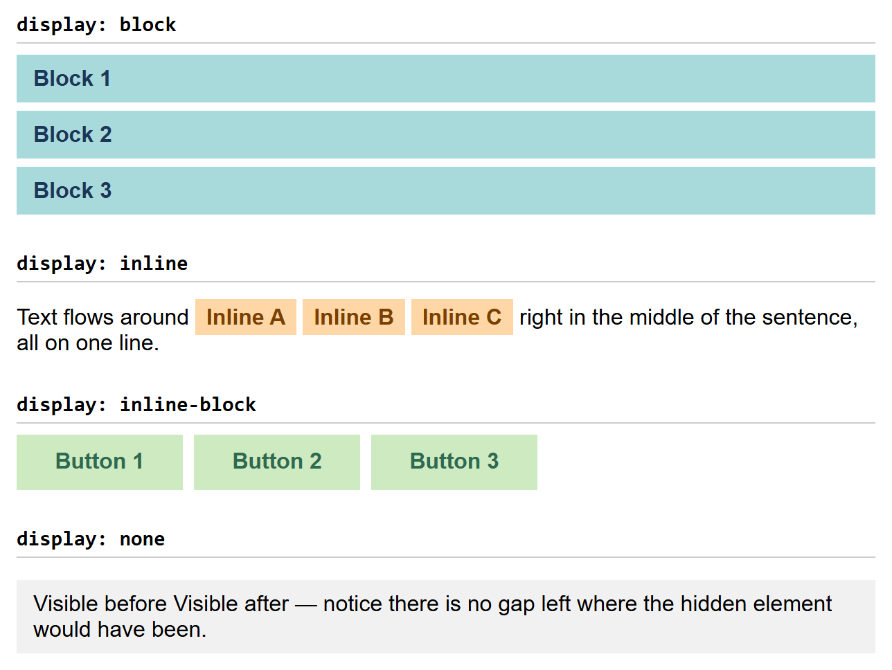
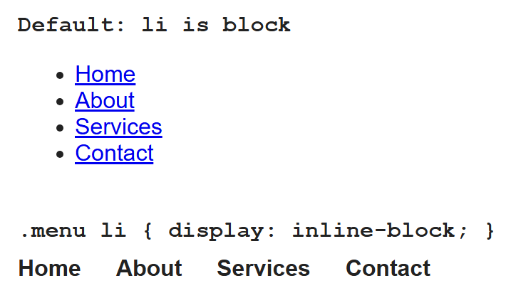

Lecture 6: The CSS Box Model and Display¶
Every single element on a web page — a paragraph, a button, an image — is rendered by the browser as a rectangular box. Understanding how the size of that box is calculated, and how boxes behave next to each other, is the single most important skill for building layouts in CSS. This lecture covers the box model and the display property, the two ideas behind almost everything you will do in CSS layout.
In This Lecture¶
- The four layers of the box model: content, padding, border, and margin
- Margin collapsing, and why it surprises beginners
box-sizing:content-boxvs.border-box- Controlling size with
width,height, andmin-/max-constraints - The
displayproperty:block,inline,inline-block, andnone - A real technique: turning a
<ul>into a horizontal menu withdisplay, and why - Borders, shadows, and techniques for consistent spacing
The Box Model¶
Every HTML element, when rendered by the browser, is treated as a rectangular box made up of four layers, nested inside each other like Russian dolls:
- Content — the actual text, image, or other content of the element.
- Padding — transparent space between the content and the border. Padding is inside the element; it takes on the element's background colour.
- Border — a line (or nothing) drawn around the padding.
- Margin — transparent space outside the border, separating this element from its neighbours. Margin is never filled with background colour — it's just empty space.
Here is a small demo built from those same four layers, each given its own background colour so the nesting is easy to see (the border layer below is drawn wider than the 2px it will actually be styled with further down, purely so it shows up as a visible band in the screenshot):

You control each layer with its own set of CSS properties:
.box {
/* content size */
width: 300px;
height: 150px;
/* padding: inside space, all four sides */
padding: 20px;
/* border: line around the padding */
border: 2px solid black;
/* margin: outside space, all four sides */
margin: 30px;
}
You can also target a single side of padding, border, or margin:
Or use the shorthand, which accepts one to four values:
/* one value: applies to all four sides */
padding: 10px;
/* two values: top-bottom, left-right */
padding: 10px 20px;
/* four values: top, right, bottom, left (clockwise) */
padding: 10px 20px 15px 5px;
Margin Collapsing¶
Margin collapsing is a box-model behaviour that surprises many beginners: when two elements are stacked vertically and both have a margin between them, the browser does not add the two margins together. Instead, it uses the larger of the two margins as the actual gap.
You might expect a 50px gap (30px + 20px) between these two boxes, but because of margin collapsing, the actual gap is only 30px — the larger of the two.
Rendered in a browser (background colours added to the two boxes purely so their edges are easy to spot):

Margin collapsing only happens vertically
Margin collapsing applies only to the top and bottom margins of block-level
elements in normal document flow. It does not happen with left/right margins, and
it does not happen if the elements use display: flex, display: grid, floats, or
absolute positioning. This is a common source of confusion when debugging spacing.
box-sizing: content-box vs. border-box¶
Here is a question: if you set width: 300px on an element, and also give it
padding: 20px and border: 2px solid black, how wide is the element actually rendered on
the screen?
The answer depends on the box-sizing property.
content-box (the default)¶
With the default value, content-box, the width and height you set apply only to the
content area. Padding and border are then added on top of that width.
.box {
box-sizing: content-box; /* default */
width: 300px;
padding: 20px;
border: 2px solid black;
}
/* actual rendered width = 300 + 20 + 20 + 2 + 2 = 344px */
This means adding padding or a border makes the box grow bigger than the width you specified, which is often not what beginners expect.
border-box¶
With box-sizing: border-box, the width and height you set include the padding and
border. The content area shrinks to make room for them, but the total box stays at exactly
the width you specified.
.box {
box-sizing: border-box;
width: 300px;
padding: 20px;
border: 2px solid black;
}
/* actual rendered width = exactly 300px */
Here are both boxes rendered side by side — same width: 300px, same padding: 20px, same
border: 2px solid black, differing only in box-sizing. Notice the content-box box is
visibly wider on screen than the border-box box, even though both were told width: 300px:

border-box is the practical default for real projects
Because border-box makes sizing much more predictable, most real-world style sheets
start with this reset, which applies border-box to every element on the page:
width, height, and min/max constraints¶
Besides fixed width and height, CSS lets you set flexible minimum and maximum
constraints:
.container {
width: 90%;
max-width: 1000px; /* never grow wider than 1000px, even on huge screens */
min-width: 300px; /* never shrink narrower than 300px */
min-height: 200px; /* always at least 200px tall, but can grow if content needs more */
}
max-width is especially common for making a page look good on both small and large
screens: the box scales down with the screen on narrow devices, but stops growing past a
sensible limit on wide monitors.
What happens when content doesn't fit its box?
Setting a fixed width/height raises an obvious question: what if the content is
bigger than the box? That's controlled by the overflow property — covered in the next
lecture alongside float, since overflow is also the standard fix for a classic
float layout bug.
The display Property¶
The display property controls how an element behaves in the page layout: whether it
starts on a new line, how much horizontal space it takes up, and whether it participates in
layout at all.
block¶
A block-level element always starts on a new line and stretches to fill the full width
of its parent container by default. width and height are fully respected. Examples of
elements that are block by default: <div>, <p>, <h1>–<h6>, <ul>, <li>.
inline¶
An inline element does not start on a new line — it flows within the surrounding
text, taking up only as much width as its content needs. width and height are
ignored on inline elements, and vertical margin/padding do not push other content
away (though horizontal margin/padding still work visually). Examples that are inline by
default: <span>, <a>, <strong>, <em>.
inline-block¶
inline-block is a hybrid: the element flows inline with surrounding content like an
inline element (no forced line break), but it respects width, height, and vertical
margin/padding like a block element. This makes it useful for things like navigation
links or buttons that sit next to each other but still need a defined size.
none¶
display: none removes the element from the page entirely — it takes up no space at
all, as if it were never in the HTML. This is different from making something invisible
with visibility: hidden, which hides the element but still reserves its space in the
layout.
All four values, rendered together and compared directly:

A Practical Example: Turning a <ul> into a Horizontal Menu¶
<li> is block-level by default, so a plain <ul> always renders as a vertical stack, one
item per line. A huge number of real navigation menus are built by keeping that exact
<ul>/<li> markup and changing only the <li>'s display value — no extra <div>s, and
no change to the HTML at all:
<nav>
<ul class="menu">
<li><a href="/">Home</a></li>
<li><a href="/about.html">About</a></li>
<li><a href="/services.html">Services</a></li>
<li><a href="/contact.html">Contact</a></li>
</ul>
</nav>
.menu {
list-style: none; /* remove the bullet points */
margin: 0;
padding: 0;
}
.menu li {
display: inline-block; /* the key change — li is block by default */
margin-right: 20px;
}
.menu a {
text-decoration: none;
color: #222;
font-weight: bold;
}
Rendered in a browser — the same four-item list, before and after that one display
change:

Why go through a <ul> at all, instead of just laying out <div>s or bare links directly
with display: inline-block? Because a navigation menu is, conceptually, a list of
links — that is exactly what it is to a screen reader and to a search engine, regardless of
how it looks. Using display to change only the visual layout keeps that meaning intact:
- Screen readers announce it as a list (e.g. "navigation, list of 4 items"), telling users how many links there are and letting them jump between them.
- Search engines and any tool that builds an "outline" or "landmarks" view of a page recognize it as a genuine list of navigation links, not a handful of unrelated boxes.
- The HTML never has to change later. Redesign the menu to stay vertical, become a dropdown, or collapse into a hamburger menu on mobile, and only the CSS needs to change.
The general pattern
This is one case of a much bigger CSS habit: pick your HTML element for what it
means, and pick its display (and other layout properties) for how it should
look. A <ul> is always a list in meaning, whether it displays as a vertical stack,
a horizontal menu, or a grid of cards.
Borders, Shadows, and Consistent Spacing¶
Borders¶
A border needs three pieces of information: width, style, and colour.
.box {
border-width: 2px;
border-style: solid; /* also: dashed, dotted, double, none */
border-color: #333;
}
/* shorthand, same result */
.box {
border: 2px solid #333;
}
You can round the corners of a box with border-radius:
.card {
border-radius: 8px;
}
.avatar {
border-radius: 50%; /* makes a square box into a perfect circle */
}
Box Shadow¶
box-shadow draws a shadow behind an element's box, useful for making cards or buttons feel
"raised" off the page.
You can also add an inset shadow, drawn inside the box:
Consistent Spacing Techniques¶
Real projects usually avoid picking spacing values randomly for every element. Two common techniques help keep spacing consistent across a whole site:
- A spacing scale. Pick a small set of values (e.g., 4px, 8px, 16px, 24px, 32px) and only ever use those for padding and margin, instead of arbitrary numbers like 13px or 27px.
- CSS custom properties (variables). Define your spacing scale once, at the top of your style sheet, and reuse it everywhere:
:root {
--space-sm: 8px;
--space-md: 16px;
--space-lg: 32px;
}
.card {
padding: var(--space-md);
margin-bottom: var(--space-lg);
}
If you ever need to adjust your whole site's spacing rhythm, you only need to change the
values in :root, and every element using var(--space-md) updates automatically.
Try It Yourself¶
- Build three boxes side by side, each with
width: 150px,padding: 20px, andborder: 5px solid black, but give the first boxbox-sizing: content-boxand the other twobox-sizing: border-box. Measure (or estimate) each box's actual rendered width and explain the difference you see. - Create a small "card" component (a
<div>with a heading and a paragraph inside). Give it padding, a border-radius, and a box-shadow. Then create two cards stacked vertically, each withmargin: 20px 0, and observe the gap between them — does it look like 40px or 20px? Explain why, using what you learned about margin collapsing.
Key Takeaways¶
- Every element is a box made of four layers, from the inside out: content, padding, border, and margin.
- Vertically adjacent margins can collapse, so the gap between two elements is the larger of their two margins, not the sum.
box-sizing: content-box(default) adds padding and border on top of your set width;box-sizing: border-boxmakes padding and border count inside your set width, which is far more predictable and commonly used as a site-wide reset.min-/max-width/heightadd flexible constraints on top of a base size; what happens when content still doesn't fit is controlled byoverflow, covered in Lecture 7.display: blockstarts a new line and fills available width;inlineflows within text and ignores width/height;inline-blockcombines both behaviours;display: noneremoves an element from the layout entirely.- A
<ul>/<li>list styled with.menu li { display: inline-block; }is a common, real-world way to build a horizontal menu without giving up the semantic meaning (and accessibility) of a list. - Borders,
border-radius, andbox-shadoware the main tools for visually finishing a box; CSS custom properties (--variable-name) help keep spacing consistent across a whole site.